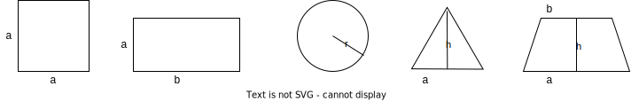

Funções
Agora que já vimos exemplos extremamente simples, vejamos alguns um pouco mais interessantes, como uma função que soma os números de x a y, inclusive.
A título de comparação, vejamos primeiro a função em linguagem C.
1 2 3 4 5 6 7 8 | |
Em Haskell, temos diversas opções para obter o mesmo resultado, por exemplo, usando uma função recursiva...
1 2 3 4 5 | |
... ou a função já existente sum, que recebe uma lista de números, neste caso criada pelo operador ..
1 | |
Observe que a sintaxe do uso das funções, contudo, é diferente; em Haskell, usa-se o nome da função, seguido dos parâmetros, com espaço os separando. Já a definição de funções segue algumas estruturas básicas, sendo a mais simples a definição via equação.
Equações
Por exemplo, consideremos uma função que soma dois números.
Em Haskell, ela é definida simplesmente como soma x y = x + y e usada como soma 3 5.
Exercício: Soma
- Defina a função soma e a use, de acordo com a imagem.1
Como outro exemplo, definamos uma função que retorna o sucessor de um inteiro como sucessor x = x + 1.
Com estas duas funções, podemos inclusive compor funções, no melhor estilo \(g(f(x))\), por exemplo: sucessor (soma 3 4) ou sucessor (sucessor (sucessor 4)).
Exercício: Composição
- Defina uma função que multiplique 3 números, isto é, dados \(x\), \(y\) e \(z\), calcule \(x*y*z\).
- Calcule \((1 + (3 * 2 * 3)) + (5 * 3 * 2)\) usando as funções de soma e multiplicação definidas.
Resolução
Defina as funções
1 2 3 | |
Invoque soma (soma 1 (mult3 3 2 3)) (mult3 5 3 2). Observe que os parênteses são necessários para delimitar os parâmetros de cada uma das invocações.
Exercício: média de 3 números
- Defina uma função que calcule a média de 3 números
Resolução
media x y z = (x + y + z)/3
Exercício: área das figuras
- Defina uma função o cálculo da área de cada figura geométrica.

Resolução
1 2 3 4 5 | |
-
Se você se logar no Repl.it, poderá salvar seus arquivos online e editá-los de qualquer lugar, como no exemplo dado no exercício. ↩